JVM系列(3) 垃圾回收
1. 垃圾识别
1.1 GC介绍
在 C 语言中，程序员需要手动管理内存，使用 malloc 分配内存，当对象不再使用时，需要使用 free 回收内存。如果忘记调用，这块内存将一直占用无法被使用，导致内存泄露，如果放任内存泄露的程序运行，在某一刻内存将占满，程序崩溃。另外，程序员可能会错误释放使用中的内存空间，下一次程序使用此空间时将会发生故障，往往会遇到令人头疼的段错误。以上问题出现的时间可能不一致，导致这类 BUG 难以定位。
为了摆脱手动管理内存的困境，Garbarge Collection，GC，垃圾回收机制应运而生。对象如果不再使用，其占用的内存将会自动被回收，后来出现的大部分语言，例如 Java、Go、C# 等都引入了垃圾回收机制。
1.2 垃圾识别
在回收对象内存之前，需要先判断该对象是否存活，有两种经典的算法：
- 引用计数
- 可达性分析
1.2.1 引用计数
引用计数的思路是，在对象中添加一个引用计数器，当被引用时，计数 +1，引用失效时，计数 -1。如果计数器的值为 0，则该对象不再被使用，可以进行回收。
引用计数的优点是思路简单，可以立即回收垃圾，暂停时间短。
引用计数无法解决循环依赖的问题，例如 A 引用了 B，B 又引用了 A，那么两个对象的计数永远不为 0，也不会被回收。
使用引用计数的语言有 Swift、C++ 11 中的 shared_ptr 等，为了解决循环依赖问题，这两种编程语言都提出了弱引用的概念，弱引用不会增加引用计数。
虽然使用弱引用可以解决循环依赖问题，但是程序员需要判断该场景是否需要使用弱引用，在复杂的循环引用中这仍是一件痛苦的事情。
1.2.2 可达性分析
介绍
另一种更加主流的机制是使用可达性分析，其思路是通过存活的一些根节点对象，根据他们的引用关系向下搜索，所经过的路径称为引用链，如果对象在引用链上不可达，便可以被回收。大部分商用语言 Java、C#、Go 都使用了可达性分析。
在 Java 中，这些存活的根节点称为 GCRoots，固定包含：
- 虚拟机栈中引用的对象，例如栈帧中的方法参数、局部变量等；
- 与虚拟机栈类似，本地方法栈引用的对象；
- 类静态属性引用的对象；
- 常量引用的对象，例如字符串对象；
- 虚拟机内部的引用，例如基本数据类型包装类的 Class 对象，常驻异常对象，系统类加载器；
- 被 synchronized 锁持有的对象。
三色标记
直接利用可达性分析识别垃圾时需要暂停所有用户线程，即 STW（Stop The World）来保证引用关系的正确性。其中枚举 GCRoots 在优化下已经十分高效，但根据引用链遍历的过程与对象数量和结构相关，耗时严重。
为了解决上述问题，引入了三色标记算法。
顾名思义，这个算法将 GC 过程中的对象分为三种：
- 白色：还未搜索过的对象
- 灰色：正在搜索的对象
- 黑色：搜索完成的对象
GC 开始前所有对象都是白色，首先将 GCRoots 标记为灰色，利用广度优先搜索的思想，不断取出灰色对象 G，并将 G 引用的所有对象 S1、S2 都标记为灰色，最后将 G 标记为黑色。之后将不断重复上述过程，标记结束之后存活对象均为黑色，垃圾均为白色。
三色标记过程可以与用户线程并发执行，但在标记过程中用户线程可能改变引用关系，导致将存活的对象标记为白色，程序发生错误，如下图所示。
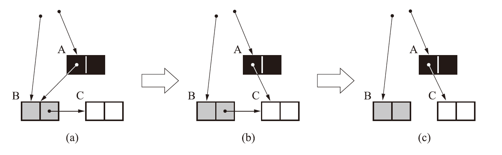
(a) 中 A 为黑色，B 为灰色，此时将要遍历 B 引用的对象，(b) (c) 中用户线程去掉了 B 到 C 的引用，增加了 A 到 C 的引用，此时 C 理应存活，但 A 已经遍历结束，已经没有引用链可以到达 C，C 被标记为白色，GC 过程中将被回收。
科学家们证明了上述漏标出现需要同时满足两个条件：
- 插入了黑色对象到白色对象的引用
- 删除了所有灰色对象到该白色对应的引用
破坏条件 1 的方案为增量更新，黑色对象新增对白色对象的引用，将变为灰色。
破坏条件 2 的方案为原始快照，当灰色对象删除到白色对象的引用时，记录这些灰色对象，在并发扫描结束后，重新扫描这些灰色对象。
2. 垃圾收集算法
2.1 分代收集
主流的垃圾收集器都遵守了分代收集的理论，即在不同的区域使用不同的垃圾收集算法，其建立在两个假设上：
- 绝大多数对象创建后不久就会被回收；
- 多次未被垃圾回收的对象越难消亡。
这两个假设给出了垃圾收集器的设计原则，将堆分为不同的区域，新生代和老年代。新生代中的对象大概率会被回收，而存活的对象将逐步晋升到老年代。
但如果新生代和老年代的对象互相引用，即跨代引用，将导致每次 GC 都需要使用可达性分析遍历新生代和老年代，性能开销大。为此在新生代建立一种数据结构卡表，卡表会标记老年代的某一块内存存在跨代引用，当新生代发生 Minor GC 时，只有那块内存会被加入了 GCRoots 进行扫描，提高了 GC 的效率。
2.2 术语定义
hotspot 常用的 GC 类型：
- 部分收集：针对堆中某些部分进行垃圾收集
- Minor GC：也成 Young GC，在新生代进行收集；
- Major GC：也称 Old GC，在老年代进行收集，只有 CMS 的并发收集是这个模式；
- Mixed GC：收集新生代和部分老年代，只有 G1 使用该模式。
- 整堆收集：Full GC，收集整个堆，包括新生代、老年代、永久代（如果有的话）。
Major GC 通常等价于 Full GC，hotspot 历史悠久，外界对各种名词的解读已经完全混乱了，需要仔细辨别。
接下来将介绍三个常见的垃圾收集算法。
2.3 标记-清除算法
标记-清除算法首先标记需要回收的对象，在标记完成后，回收被标记的对象。
该算法优点是直观简单，但有以下缺点：
- 执行效率随需要被回收的对象数量增加
- 产生内存碎片
- 与 copy on write 机制不兼容，需要引入其他机制弥补
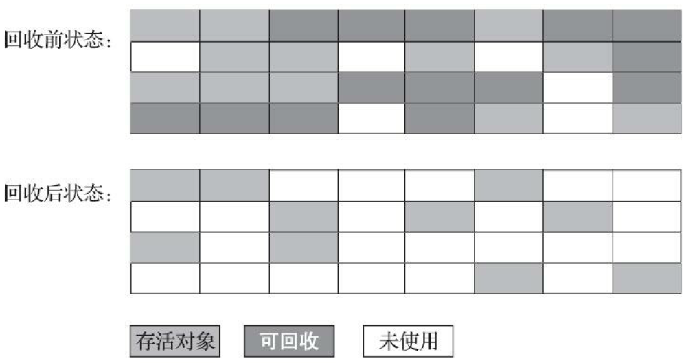
2.4 标记-复制算法
标记-复制算法将内存分为相等的两块 T1 和 T2，每次只使用其中一块，发生 GC 时，将 T1 存活的对象复制到 T2，并回收 T1，交换 T1 和 T2 的角色。
标记-复制算法解决了标记-清除算法面对大量可回收对象效率低下的问题，但是可用内存缩小了原来的一半，更容易发生 GC，故常用在新生代。
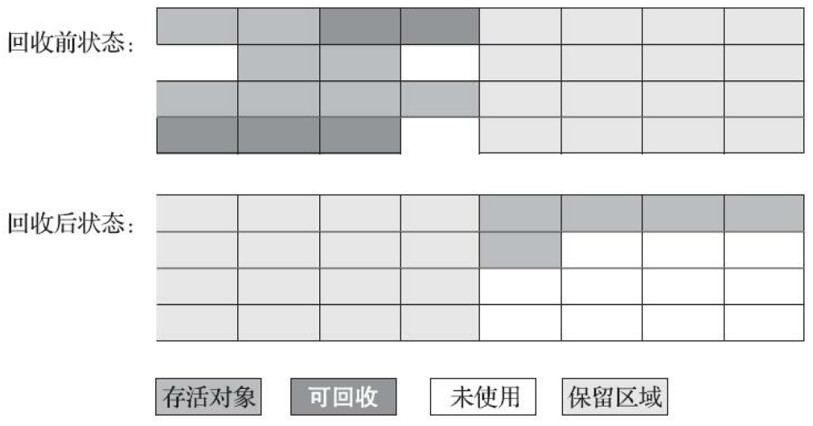
2.5 标记-整理算法
标记-整理算法的标记过程与标记-清除算法相同，但后续不是直接回收对象，而是让存活的对象往一端移动，并清理到边界以外的对象。
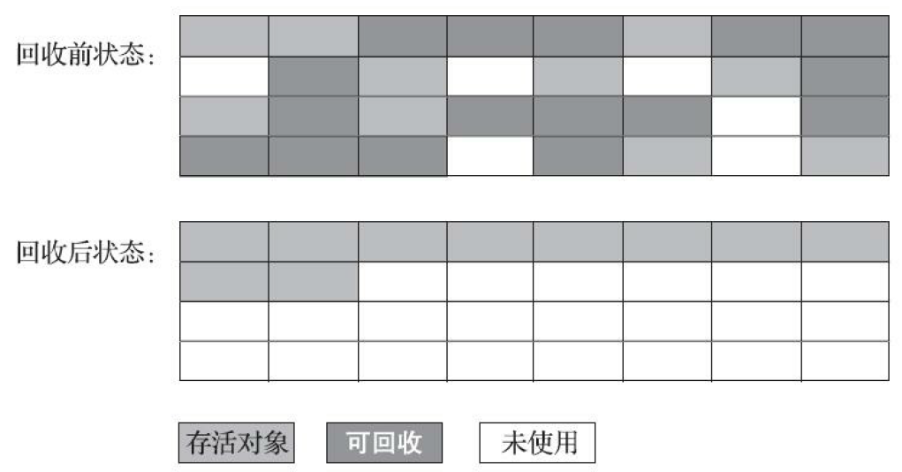
整理的过程需要 STW，如果内存中只有少量存活对象，那么标记-整理算法既高效又节约内存，常用在老年代。但如果存在大量存活对象，标记-整理算法将十分低效。
3. 垃圾收集器
接下来将介绍 hotspot 中的垃圾收集器。
3.1 Serial 和 Serial Old
Serial 是新生代的收集器，使用标记-复制算法，只使用一个线程去完成 GC 工作，并且整个过程需要 STW。
Serial 是老年代的收集器，使用标记-整理算法，其他特点与 Serial 相同。
3.2 ParNew
ParNew 是 Serial 的多线程版本，使用多线程在新生代进行 GC，其余均与 Serial 相同，整个过程仍需 STW。
3.3 Parallel Scavenge 和 Paralllel Old
Parallel Scavenge 是新生代的收集器，采用标记-复制算法，关注吞吐量，其中 吞吐量 = 用户代码运行时间 / (用户代码运行时间 + GC 运行时间)，它会根据用户设置的预期吞吐量自行分配堆运行。
Parallel Old 是 Parallel Scavenge 的老年代版本，采用标记-整理算法。
3.4 CMS
Concurrent Mark Sweep，CMS，是一款老年代收集器，基于标记-清除算法，其关注点是 STW 的时间尽可能短。
CMS 的 GC 分为四个过程：
- 初始标记：标记 GCRoots 直接引用的对象，需要 STW
- 并发标记：遍历引用链进行三色标记，CMS 避免误标的方式是使用增量更新
- 重新标记：使用增量更新重新标记，需要 STW
- 并发清除：清除所有的对象
在上文收集算法中提出，老年代常使用的标记-整理算法需要 STW。CMS 的关注点是暂停时间，这是 CMS 虽然是老年代收集器，但使用标记-清除算法的原因。
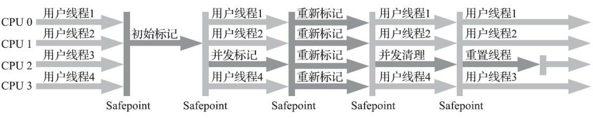
虽然 CMS 带来了极低的暂停时间，但也存在以下问题：
- 在 CPU 核心数较低时开销较大，CMS 的回收线程配置为 （处理器核心数量 +3）/4，在低配计算机上 GC 过程会影响用户体验；
- 无法处理浮动垃圾，即并发标记和并发删除期间，用户线程产生的垃圾无法在本次 GC 回收；
- 采用标记-清除算法带来的内存碎片。
3.5 G1
Garbage Firtst，G1，其目标是 soft real time，在固定时间内，停顿的时间不超过预期，例如在任意 1s 内，停顿的时间不超过 10ms。
为了实现可预测的停顿时间，G1 将堆内存化整为零，将堆内存划分为多个大小相同的区域 Region，每个 Region 根据需要可以成为新生代和老年代，并采用不同的策略进行处理。Region 是回收的最小单位，每个 Region 都会根据可回收的空间和回收所需时间维护优先级，优先回收高优先级的 Region。
由于将堆分为多个 Region，G1 对以下问题进行了额外的处理：
- 跨 Region 引用：维护双向卡表，记录每个 Region 的指向和被指向关系；
双向卡表在此处主要是为了便于理解，在 G1 的论文中使用的都是记忆集 Remembered Set 。
- 三色标记的误删问题：采用原始快照算法实现，并且在标记前设置了 TAMS（Top at Mark Start） 指针，并发标记期间用户线程只能在指针之间的区域创建对象。
类似 CMS，G1 的 GC 也分为四个过程：
- 初始标记：标记 GCRoots 直接引用的对象，设置 TAMS，需要 STW
- 并发标记：遍历引用链进行标记，并记录原始快照
- 最终标记：根据原始快照重新标记防止误删，需要 STW
- 筛选回收：更新 Region 的优先级，将待回收 Region 的存活对象复制到空 Region中，回收整个 Region，需要 STW
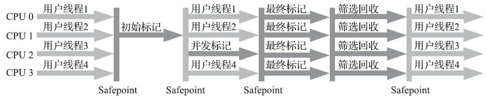
G1 有以下两种模式，并视情况切换：
- Young GC：回收区域为新生代的 Region，初始标记在这个过程执行
- Mixed GC：回收区域为新生代的 Region 和部分高优先级老年代 Region
这不代表 G1 就不进行 Full GC，当 Mixed GC 无法更上内存分配的速度时将触发 Full GC。使用了 G1 的 System.gc() 默认是 Full GC。
此处强烈推荐关注 RednaxelaFX 的博客，博主对 JVM 的理解非常深入，在博客中介绍了大量实现细节，链接放在参考资料。
限于篇幅，G1 的调优相关可以阅读 G1 Tuning。
3.6 ZGC
3.6.1 介绍
Z Garbage Collector，ZGC 是最新的垃圾收集器，采用标记-整理算法，其目标是在对吞吐量影响不大的前提，对于任意堆大小实现停顿时间在 10 ms 以内。官方的定义为可伸缩的低延迟收集器。
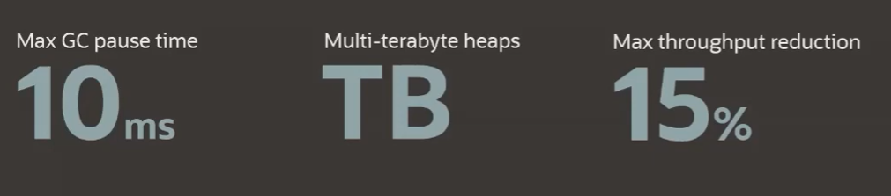
ZGC 刚发布时仅支持在 64 bit Linux 下使用，java 14 提供了对 Windows 和 macOS 的支持。下文将以 Linux 上的 ZGC 进行介绍。
与 G1 类似，ZGC 将堆分为小型 Region（4MB）、中型 Region（32MB）、大型 Region。
3.6.2 染色指针和读屏障
ZGC 的关键在于虽然使用了标记-复制算法，但是移动对象的过程不需要 STW，即并发转移。
ZGC 通过着色指针和读屏障技术实现并发转移。并发转移过程中 GC 线程在转移对象的时候，应用线程也在不停地访问对象。假设对象发生转移，但对象地址未及时更新，那么应用线程可能访问到旧地址，从而造成错误。在 ZGC 中，应用线程访问对象将触发读屏障，如果对象被移动了，读屏障将会把读出来的指针更新到对象的新地址上。应用线程始终访问的都是对象的新地址，而不需要 STW 来让 GC 和应用之间同步。
染色指针
ZGC 的一大特点是使用了染色指针，相比于 G1 使用额外的空间记录三色标记，ZGC 直接将其记录在堆中对象的指针上。Linux 中 64 bit 的指针只使用了低 46 位，而 ZGC 将 46 位中的高 4 位用于标记，可见 ZGC 只能够管理 4 TB 堆空间，其中高 4 位的使用如下图所示。

由上面分布可知，虚拟地址 [0，4TB）、[4，8TB）、[8，12TB）、[16，20TB）分别对应 Java 程序的虚拟地址、Marked0、Marked1、Remapped 视图。当程序对象时，在堆中申请一个虚拟地址，该地址不会映射到物理地址，而是为该对象在 Marked0、Marked1、Remapped 分别申请一个虚拟地址，并且映射到同一块内存，效果如下图所示。三个视图的切换在下文介绍。
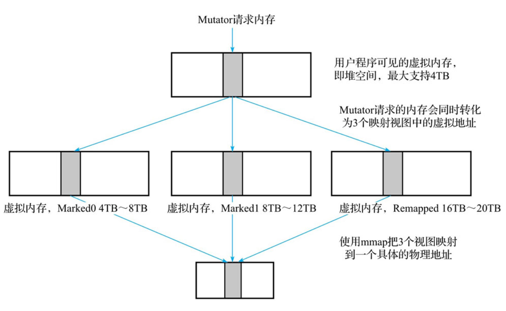
读屏障
读屏障是JVM向应用代码插入一小段代码的技术。当应用线程从堆中读取对象引用时，就会执行这段代码。
读屏障用于在对象标记和移动对象过程中，用于确定对象的引用地址是否满足条件，并作出相应动作。
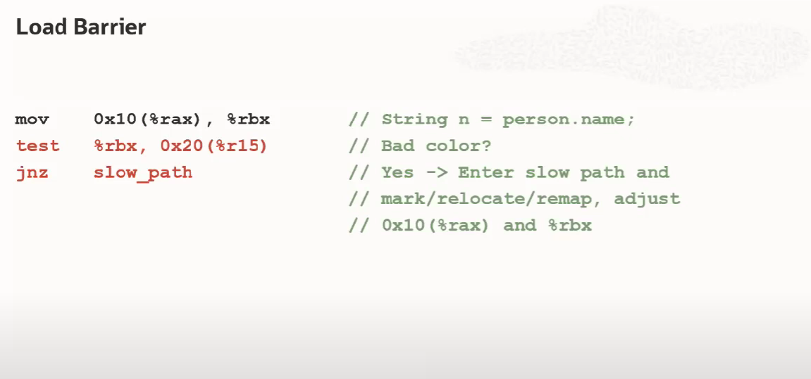
3.6.3 地址视图切换
ZGC 的回收周期如下图所示，其中只有 初始阶段、再标记、初始转移是 STW 的。
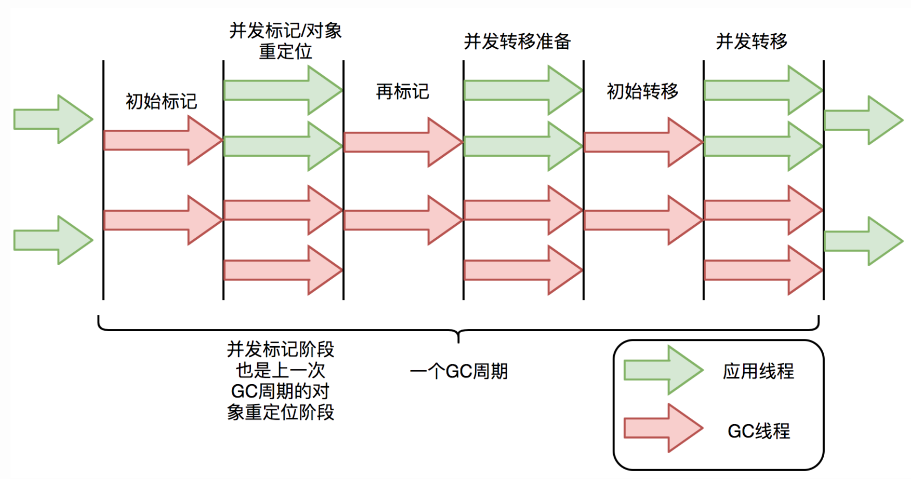
在一个周期中的地址视图切换（更新指针）过程如下：
- 初始化：整个地址空间被设置为 Remapped，满足 GC 条件后进入标记阶段；
- 并发标记：如果对象被标记线程或者用户线程访问过（即被引用），则从 Remapped 改为 Marked0。标记结束后，如果对象地址是 Marked0 视图，则该对象存活，为 Remapped 则该对象是不活跃的，内存可以被回收；
- 并发转移：标记结束后就进入转移阶段，此阶段如果对象被转移，则从 Marked0 改为Remapped。
上述过程仿佛只用到了 Marked0，那么 Marked1 在何处使用呢？Marked0 和 Marked1 主要用于区分前一次标记和当前标记，第二次进入并发标记阶段后，地址视图将改为 Marked1。对象 0 所在的页面要被回收，需要转移，对象 2 所在的页面不用被回收，不需要转移。对象 0 转移过后它的视图改为 Remapped，对象 2 仍为 Marked0。那么下一次垃圾回收标记阶段开始的时候，存在两种地址视图，Remapped 和 Marked0，如果本次标记仍然使用 Marked0 这个地址视图，那么就不能区分出对象是活跃的，还是上一次标记过的。所以新标记阶段使用了另外一个地址视图 Marked1，标记结束后所有活跃对象的地址视图都为 Marked1。
具体算法实现可见 《新一代垃圾回收器ZGC设计与实现》第 4 章。
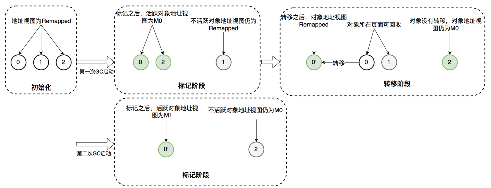
此时三个视图代表的含义为：
- Marked1：本次 GC 识别的活跃对象。
- Marked0：前一次垃圾回收的标记阶段被标记过的活跃对象，对象在转移阶段未被转移，但是在本次垃圾回收中被识别为不活跃对象。
- Remapped：前一次垃圾回收的转移阶段发生转移的对象或者是被应用程序线程访问的对象，但是在本次垃圾回收中被识别为不活跃对象。
4. 总结图
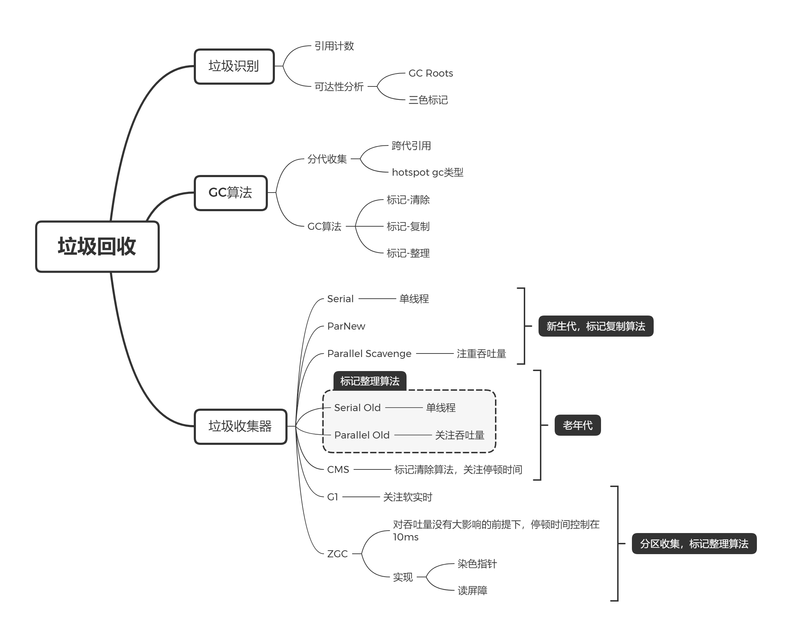